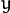
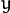

Basic Drawing¶
Goals¶
In this tutorial you will learn how to:
- Use Point to define 2D points in an image.
- Use Scalar and why it is useful
- Draw a line by using the OpenCV function line
- Draw an ellipse by using the OpenCV function ellipse
- Draw a rectangle by using the OpenCV function rectangle
- Draw a circle by using the OpenCV function circle
- Draw a filled polygon by using the OpenCV function fillPoly
OpenCV Theory¶
For this tutorial, we will heavily use two structures: Point and Scalar:
Point¶
 and . We can define it as:
and . We can define it as:Point pt;
pt.x = 10;
pt.y = 8;
or
Point pt = Point(10, 8);
Scalar¶
Represents a 4-element vector. The type Scalar is widely used in OpenCV for passing pixel values.
In this tutorial, we will use it extensively to represent BGR color values (3 parameters). It is not necessary to define the last argument if it is not going to be used.
Let’s see an example, if we are asked for a color argument and we give:
Scalar( a, b, c )
We would be defining a BGR color such as: Blue = a, Green = b and Red = c
Explanation¶
Since we plan to draw two examples (an atom and a rook), we have to create 02 images and two windows to display them.
/// Windows names char atom_window[] = "Drawing 1: Atom"; char rook_window[] = "Drawing 2: Rook"; /// Create black empty images Mat atom_image = Mat::zeros( w, w, CV_8UC3 ); Mat rook_image = Mat::zeros( w, w, CV_8UC3 );
We created functions to draw different geometric shapes. For instance, to draw the atom we used MyEllipse and MyFilledCircle:
/// 1. Draw a simple atom: /// 1.a. Creating ellipses MyEllipse( atom_image, 90 ); MyEllipse( atom_image, 0 ); MyEllipse( atom_image, 45 ); MyEllipse( atom_image, -45 ); /// 1.b. Creating circles MyFilledCircle( atom_image, Point( w/2.0, w/2.0) );
And to draw the rook we employed MyLine, rectangle and a MyPolygon:
/// 2. Draw a rook /// 2.a. Create a convex polygon MyPolygon( rook_image ); /// 2.b. Creating rectangles rectangle( rook_image, Point( 0, 7*w/8.0 ), Point( w, w), Scalar( 0, 255, 255 ), -1, 8 ); /// 2.c. Create a few lines MyLine( rook_image, Point( 0, 15*w/16 ), Point( w, 15*w/16 ) ); MyLine( rook_image, Point( w/4, 7*w/8 ), Point( w/4, w ) ); MyLine( rook_image, Point( w/2, 7*w/8 ), Point( w/2, w ) ); MyLine( rook_image, Point( 3*w/4, 7*w/8 ), Point( 3*w/4, w ) );
Let’s check what is inside each of these functions:
MyLine
void MyLine( Mat img, Point start, Point end ) { int thickness = 2; int lineType = 8; line( img, start, end, Scalar( 0, 0, 0 ), thickness, lineType ); }
As we can see, MyLine just call the function line, which does the following:
- Draw a line from Point start to Point end
- The line is displayed in the image img
- The line color is defined by Scalar( 0, 0, 0) which is the BGR value correspondent to Black
- The line thickness is set to thickness (in this case 2)
- The line is a 8-connected one (lineType = 8)
MyEllipse
void MyEllipse( Mat img, double angle ) { int thickness = 2; int lineType = 8; ellipse( img, Point( w/2.0, w/2.0 ), Size( w/4.0, w/16.0 ), angle, 0, 360, Scalar( 255, 0, 0 ), thickness, lineType ); }
From the code above, we can observe that the function ellipse draws an ellipse such that:
- The ellipse is displayed in the image img
- The ellipse center is located in the point (w/2.0, w/2.0) and is enclosed in a box of size (w/4.0, w/16.0)
- The ellipse is rotated angle degrees
- The ellipse extends an arc between 0 and 360 degrees
- The color of the figure will be Scalar( 255, 0, 0) which means blue in BGR value.
- The ellipse’s thickness is 2.
MyFilledCircle
void MyFilledCircle( Mat img, Point center ) { int thickness = -1; int lineType = 8; circle( img, center, w/32.0, Scalar( 0, 0, 255 ), thickness, lineType ); }
Similar to the ellipse function, we can observe that circle receives as arguments:
- The image where the circle will be displayed (img)
- The center of the circle denoted as the Point center
- The radius of the circle: w/32.0
- The color of the circle: Scalar(0, 0, 255) which means Red in BGR
- Since thickness = -1, the circle will be drawn filled.
MyPolygon
void MyPolygon( Mat img ) { int lineType = 8; /** Create some points */ Point rook_points[1][20]; rook_points[0][0] = Point( w/4.0, 7*w/8.0 ); rook_points[0][1] = Point( 3*w/4.0, 7*w/8.0 ); rook_points[0][2] = Point( 3*w/4.0, 13*w/16.0 ); rook_points[0][3] = Point( 11*w/16.0, 13*w/16.0 ); rook_points[0][4] = Point( 19*w/32.0, 3*w/8.0 ); rook_points[0][5] = Point( 3*w/4.0, 3*w/8.0 ); rook_points[0][6] = Point( 3*w/4.0, w/8.0 ); rook_points[0][7] = Point( 26*w/40.0, w/8.0 ); rook_points[0][8] = Point( 26*w/40.0, w/4.0 ); rook_points[0][9] = Point( 22*w/40.0, w/4.0 ); rook_points[0][10] = Point( 22*w/40.0, w/8.0 ); rook_points[0][11] = Point( 18*w/40.0, w/8.0 ); rook_points[0][12] = Point( 18*w/40.0, w/4.0 ); rook_points[0][13] = Point( 14*w/40.0, w/4.0 ); rook_points[0][14] = Point( 14*w/40.0, w/8.0 ); rook_points[0][15] = Point( w/4.0, w/8.0 ); rook_points[0][16] = Point( w/4.0, 3*w/8.0 ); rook_points[0][17] = Point( 13*w/32.0, 3*w/8.0 ); rook_points[0][18] = Point( 5*w/16.0, 13*w/16.0 ); rook_points[0][19] = Point( w/4.0, 13*w/16.0) ; const Point* ppt[1] = { rook_points[0] }; int npt[] = { 20 }; fillPoly( img, ppt, npt, 1, Scalar( 255, 255, 255 ), lineType ); }
To draw a filled polygon we use the function fillPoly. We note that:
- The polygon will be drawn on img
- The vertices of the polygon are the set of points in ppt
- The total number of vertices to be drawn are npt
- The number of polygons to be drawn is only 1
- The color of the polygon is defined by Scalar( 255, 255, 255), which is the BGR value for white
rectangle
rectangle( rook_image, Point( 0, 7*w/8.0 ), Point( w, w), Scalar( 0, 255, 255 ), -1, 8 );
Finally we have the rectangle function (we did not create a special function for this guy). We note that:
- The rectangle will be drawn on rook_image
- Two opposite vertices of the rectangle are defined by ** Point( 0, 7*w/8.0 )** and Point( w, w)
- The color of the rectangle is given by Scalar(0, 255, 255) which is the BGR value for yellow
- Since the thickness value is given by -1, the rectangle will be filled.

Help and Feedback
You did not find what you were looking for?- Ask a question on the Q&A forum.
- If you think something is missing or wrong in the documentation, please file a bug report.

Table Of Contents
Previous topic
Changing the contrast and brightness of an image!
Next topic
Random generator and text with OpenCV